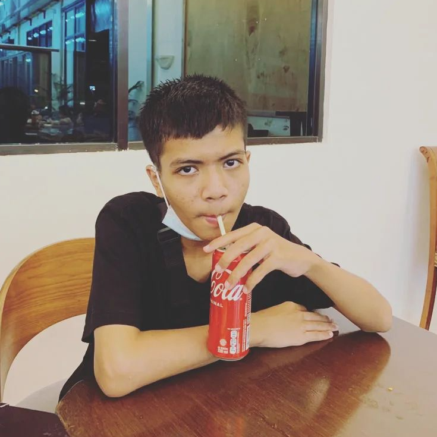

About Me
Hallo, perkenalkan nama panjang saya Ficky Febryan Saputra Bolibatu.
Saya biasa di panggil Ficky dan saya lahir di Batam pada tanggal
2 February 2007.
Saya merupakan seorang siswa SMK Negeri 7 Batam
dan saya mengambil jurusan Pengembangan Perangkat Lunak dan Gim (PPLG)
dengan kosentrasi keahlian Rekayasa Perangkat Lunak (RPL).
Saya kini sedang membuat sebuah website yang bernama "Cafe Junking".
Di bagian Tentang Kami ini, saya akan menjelaskan info detail seputar Cafe Junking
dan beberapa informasi tentang pribadi saya.